أساسيات تطبيقات الويب
قبل أن نبدأ البرمجة، سنستعرض بعض مبادئ تطوير الويب من خلال فحص تطبيق مثال على العنوان https://studies.cs.helsinki.fi/exampleapp.
التطبيق موجود فقط لتوضيح بعض المفاهيم الأساسية في الدورة، وهو بأي حال من الأحوال ليس مثالاً على كيفية بناء تطبيق ويب حديث. بل على العكس، إنه يوضح بعض التقنيات القديمة في تطوير الويب، والتي قد تُعتبر اليوم ممارسات سيئة.
ستتوافق الشيفرة مع أفضل الممارسات المعاصرة بدءاً من الجزء 1 فصاعداً.
افتح تطبيق المثال في متصفحك. قد يستغرق هذا بعض الوقت أحياناً.
أُعدّت مواد الدورة باستخدام متصفح Chrome وتم تكييفها له.
القاعدة الأولى في تطوير الويب: أبقِ وحدة تحكم المطوّر مفتوحة دائماً في متصفحك. على macOS، افتح وحدة التحكم بالضغط على fn-F12 أو option-cmd-i معاً. على Windows أو Linux، افتح وحدة التحكم بالضغط على Fn-F12 أو ctrl-shift-i معاً. يمكن أيضاً فتح وحدة التحكم عبر قائمة السياق.
تذكّر أن تُبقي وحدة تحكم المطوّر مفتوحة دائماً أثناء تطوير تطبيقات الويب.
تبدو وحدة التحكم هكذا:
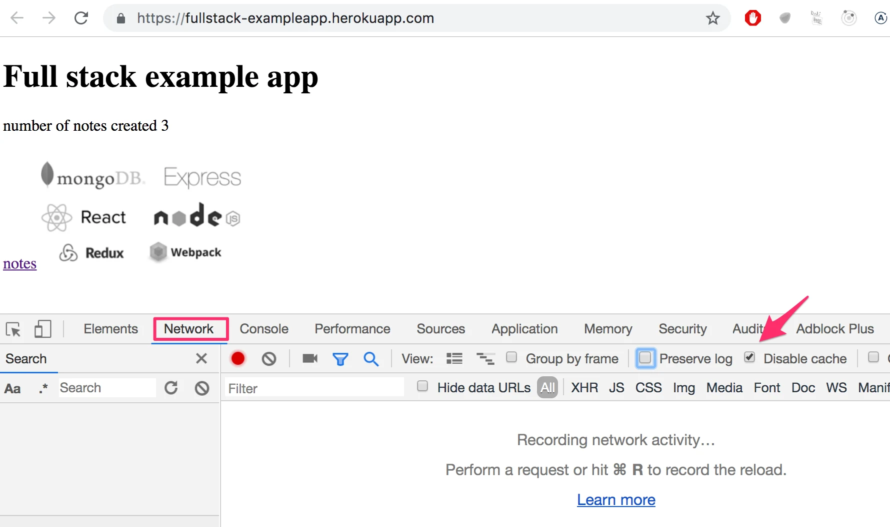
تأكد من أن تبويب Network مفتوح، وفعّل خيار Disable cache كما هو موضح. قد يكون Preserve log مفيداً أيضاً (فهو يحفظ السجلات التي يطبعها التطبيق عند إعادة تحميل الصفحة)، وكذلك "Hide extension URLs" (الذي يخفي طلبات أي إضافات مثبّتة في المتصفح، وهي غير ظاهرة في الصورة أعلاه).
ملاحظة: أهم تبويب هو تبويب Console. لكننا سنستخدم تبويب Network كثيراً في هذه المقدمة.
HTTP GET
يتواصل الخادم ومتصفح الويب مع بعضهما باستخدام بروتوكول HTTP. يُظهر تبويب Network كيف يتواصل المتصفح والخادم.
عند إعادة تحميل الصفحة (لتحديث صفحة ويب على Windows، اضغط المفتاحين Fn-F5. على macOS، اضغط command-R. أو اضغط رمز ↻ في متصفحك)، ستُظهر وحدة التحكم أن حدثين قد وقعا:
- جلب المتصفح محتويات الصفحة studies.cs.helsinki.fi/exampleapp من الخادم
- ونزّل الصورة kuva.png
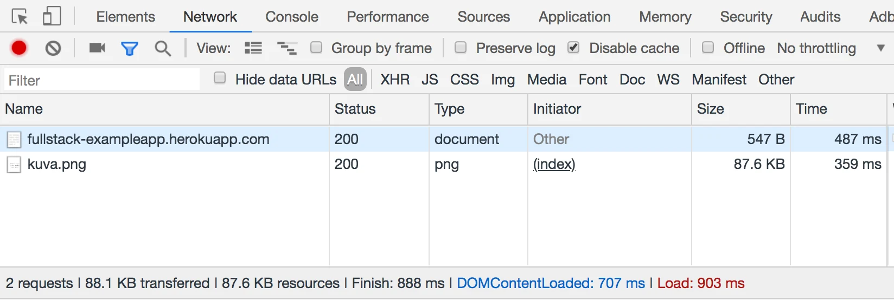
على الشاشات الصغيرة، قد تحتاج إلى توسيع نافذة وحدة التحكم لرؤية ذلك.
بالنقر على الحدث الأول تظهر مزيد من المعلومات حول ما يجري:
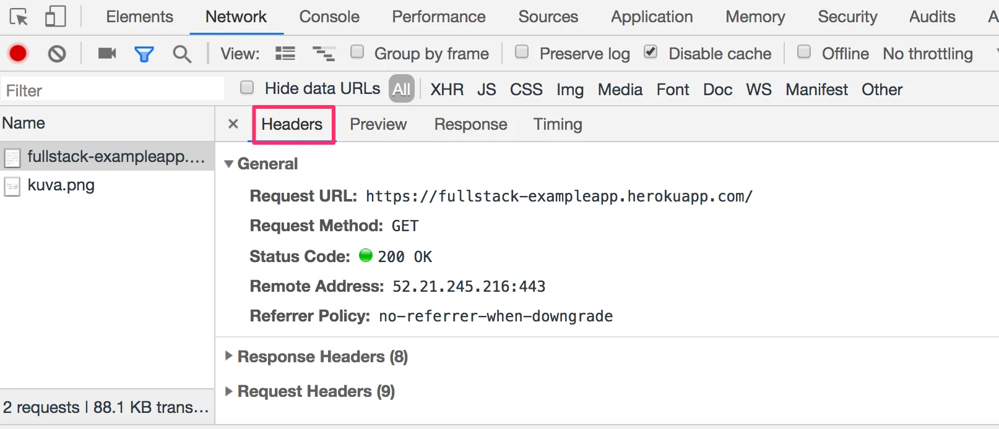
يُظهر الجزء العلوي General أن المتصفح طلب العنوان https://studies.cs.helsinki.fi/exampleapp (وإن كان العنوان قد تغيّر قليلاً منذ التقاط هذه الصورة) باستخدام طريقة GET، وأن الطلب كان ناجحاً لأن استجابة الخادم حملت رمز الحالة 200.
يحمل الطلب واستجابة الخادم عدة ترويسات:
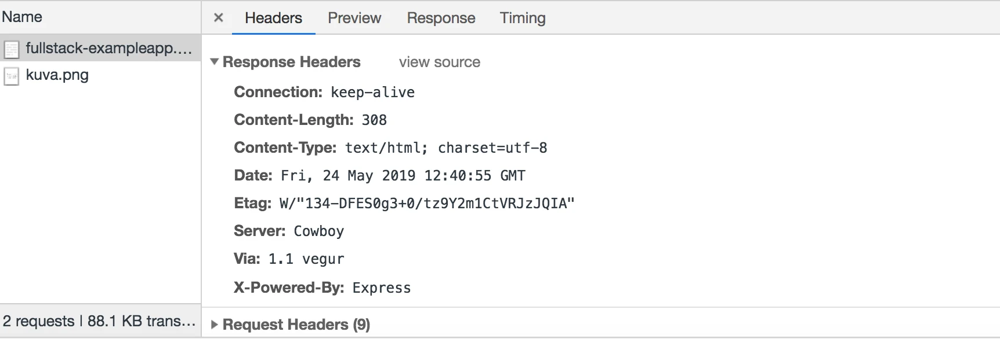
تخبرنا Response headers في الأعلى مثلاً بحجم الاستجابة بالبايتات ووقت الاستجابة الدقيق. ويخبرنا ترويس مهم هو Content-Type بأن الاستجابة ملف نصي بصيغة utf-8 وأن محتوياته منسّقة بـ HTML. بهذه الطريقة يعرف المتصفح أن الاستجابة صفحة HTML عادية ويعرضها في المتصفح «كصفحة ويب».
يعرض تبويب Response بيانات الاستجابة، وهي صفحة HTML عادية. ويحدد قسم body بنية الصفحة المعروضة على الشاشة:
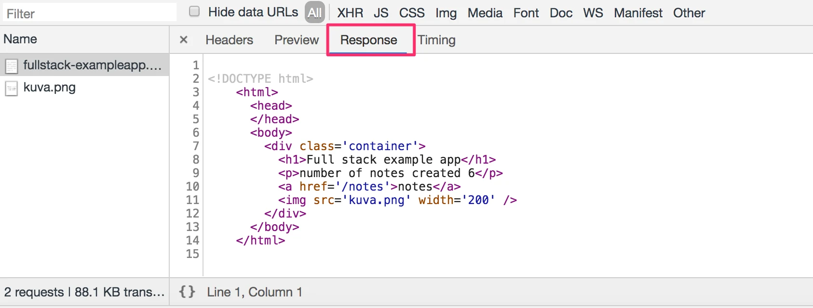
تحتوي الصفحة على عنصر div، يحتوي بدوره على عنوان ورابط إلى الصفحة notes ووسم img، وتعرض عدد الملاحظات المُنشأة.
بسبب وسم img، يُجري المتصفح طلب HTTP ثانياً لجلب الصورة kuva.png من الخادم. تفاصيل الطلب كما يلي:
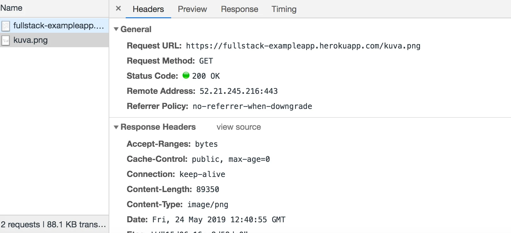
أُرسل الطلب إلى العنوان https://studies.cs.helsinki.fi/exampleapp/kuva.png ونوعه HTTP GET. تخبرنا ترويسات الاستجابة أن حجم الاستجابة 89350 بايت، وأن Content-type هو image/png، أي أنها صورة png. يستخدم المتصفح هذه المعلومات لعرض الصورة بشكل صحيح على الشاشة.
{kind=link}
تشكّل سلسلة الأحداث الناتجة عن فتح الصفحة https://studies.cs.helsinki.fi/exampleapp في المتصفح مخطط التتابع التالي:
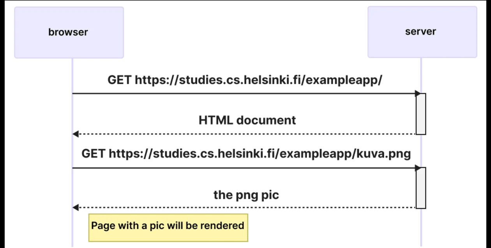
يوضّح مخطط التتابع كيفية تواصل المتصفح والخادم مع مرور الوقت. يتدفق الوقت في المخطط من الأعلى إلى الأسفل، لذا يبدأ المخطط بأول طلب يرسله المتصفح إلى الخادم، تليه الاستجابة.
أولاً، يرسل المتصفح طلب HTTP GET إلى الخادم لجلب شيفرة HTML للصفحة. ويدفع وسم img في HTML المتصفحَ إلى جلب الصورة kuva.png. ثم يعرض المتصفح صفحة HTML والصورة على الشاشة.
ورغم صعوبة ملاحظة ذلك، تبدأ صفحة HTML في العرض قبل جلب الصورة من الخادم.
تطبيقات الويب التقليدية
تعمل الصفحة الرئيسية لتطبيق المثال مثل تطبيق ويب تقليدي. عند دخول الصفحة، يجلب المتصفح من الخادم مستند HTML الذي يوضّح بنية الصفحة ومحتواها النصي.
كوّن الخادم هذا المستند بطريقة ما. قد يكون المستند ملفاً نصياً ثابتاً محفوظاً في مجلد الخادم. ويمكن للخادم أيضاً تكوين مستندات HTML ديناميكياً وفقاً لشيفرة التطبيق، باستخدام بيانات من قاعدة البيانات مثلاً. وقد كُوّنت شيفرة HTML لتطبيق المثال ديناميكياً لأنها تحتوي على معلومات عن عدد الملاحظات المُنشأة.
تُكوَّن شيفرة HTML للصفحة الرئيسية ديناميكياً على الخادم كما يلي:
const getFrontPageHtml = noteCount => {
return `
<!DOCTYPE html>
<html>
<head>
</head>
<body>
<div class='container'>
<h1>Full stack example app</h1>
<p>number of notes created ${noteCount}</p>
<a href='/notes'>notes</a>
<img src='kuva.png' width='200' />
</div>
</body>
</html>
`
}
app.get('/', (req, res) => {
const page = getFrontPageHtml(notes.length)
res.send(page)
})
لا يلزمك فهم الشيفرة الآن.
حُفظ محتوى صفحة HTML كنص قالب (template string)، أي نص يسمح بتقييم متغيرات مثل noteCount في وسطه. ويُستبدل الجزء المتغيّر ديناميكياً من الصفحة الرئيسية، وهو عدد الملاحظات المحفوظة (في الشيفرة noteCount)، بالعدد الحالي للملاحظات (في الشيفرة notes.length) داخل نص القالب.
كتابة HTML وسط الشيفرة ليست فكرة ذكية بالطبع، لكنها كانت ممارسة عادية لدى مبرمجي PHP من المدرسة القديمة.
في تطبيقات الويب التقليدية، يكون المتصفح "غبياً". فهو يجلب بيانات HTML فقط من الخادم، ويكون كل منطق التطبيق على الخادم. ويمكن إنشاء خادم باستخدام Java Spring أو Python Flask أو Ruby on Rails على سبيل المثال لا الحصر.
يستخدم المثال مكتبة Express مع Node.js. وستستخدم هذه الدورة Node.js و Express لإنشاء خوادم ويب.
تشغيل منطق التطبيق في المتصفح
أبقِ وحدة تحكم المطوّر مفتوحة. أفرغ وحدة التحكم بالنقر على رمز 🚫، أو بكتابة clear() في وحدة التحكم. الآن عند انتقالك إلى صفحة notes، يُجري المتصفح 4 طلبات HTTP:
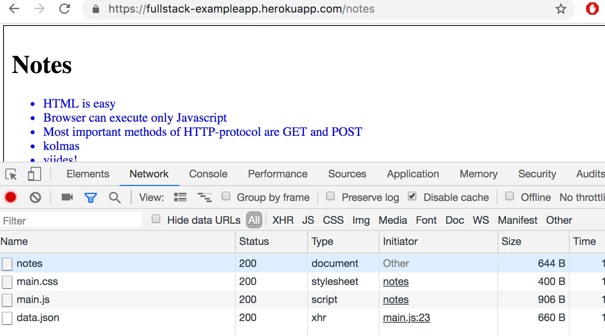
لكل الطلبات أنواع مختلفة. نوع الطلب الأول هو document. وهو شيفرة HTML للصفحة، ويبدو كما يلي:
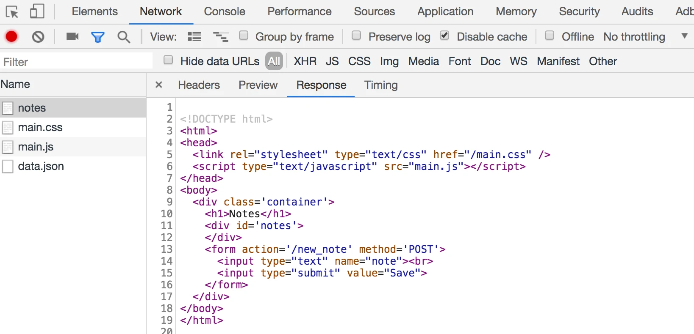
عندما نقارن الصفحة المعروضة في المتصفح بشيفرة HTML التي يعيدها الخادم، نلاحظ أن الشيفرة لا تحتوي على قائمة الملاحظات. يحتوي قسم head في HTML على وسم script، وهو ما يجعل المتصفح يجلب ملف JavaScript يُسمى main.js.
تبدو شيفرة JavaScript كما يلي:
var xhttp = new XMLHttpRequest()
xhttp.onreadystatechange = function() {
if (this.readyState == 4 && this.status == 200) {
const data = JSON.parse(this.responseText)
console.log(data)
var ul = document.createElement('ul')
ul.setAttribute('class', 'notes')
data.forEach(function(note) {
var li = document.createElement('li')
ul.appendChild(li)
li.appendChild(document.createTextNode(note.content))
})
document.getElementById('notes').appendChild(ul)
}
}
xhttp.open('GET', '/data.json', true)
xhttp.send()
تفاصيل الشيفرة ليست مهمة الآن، لكن أُدرجت بعض الشيفرة لإثراء الصور والنص. سنبدأ البرمجة فعلياً في الجزء 1. وشيفرة المثال في هذا الجزء لا علاقة لها إطلاقاً بتقنيات البرمجة في هذه الدورة.
قد يتساءل البعض لماذا يُستخدم كائن xhttp بدلاً من fetch الحديث. السبب هو عدم الرغبة في الخوض في promises بعد، ولأن للشيفرة دوراً ثانوياً في هذا الجزء. سنعود إلى الطرق الحديثة لإرسال الطلبات إلى الخادم في الجزء 2.
فور جلب وسم script، يبدأ المتصفح في تنفيذ الشيفرة.
يوجّه السطران الأخيران المتصفحَ إلى إرسال طلب HTTP GET إلى عنوان الخادم /data.json:
xhttp.open('GET', '/data.json', true)
xhttp.send()
هذا هو الطلب الأخير في الأسفل الظاهر في تبويب Network.
يمكننا محاولة الانتقال إلى العنوان https://studies.cs.helsinki.fi/exampleapp/data.json مباشرة من المتصفح:
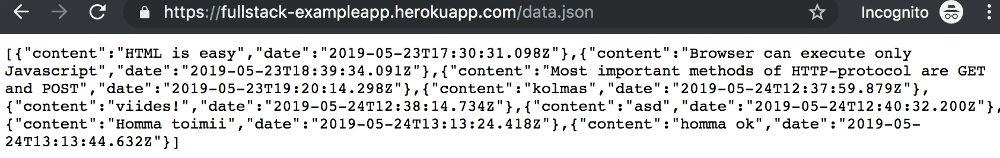
هناك نجد الملاحظات في "بيانات JSON الخام". افتراضياً، ليست المتصفحات المبنية على Chromium جيدة جداً في عرض بيانات JSON. ويمكن استخدام إضافات للتعامل مع التنسيق. ثبّت مثلاً JSONView على Chrome، ثم أعد تحميل الصفحة. ستصبح البيانات الآن منسّقة بشكل جميل:
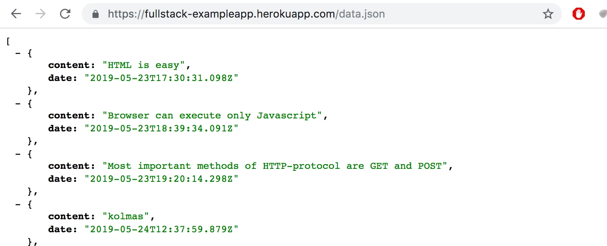
إذن، تُنزّل شيفرة JavaScript لصفحة notes أعلاه بيانات JSON التي تحتوي على الملاحظات، وتكوّن قائمة نقطية من محتويات الملاحظات:
يحدث هذا بالشيفرة التالية:
const data = JSON.parse(this.responseText)
console.log(data)
var ul = document.createElement('ul')
ul.setAttribute('class', 'notes')
data.forEach(function(note) {
var li = document.createElement('li')
ul.appendChild(li)
li.appendChild(document.createTextNode(note.content))
})
document.getElementById('notes').appendChild(ul)
تنشئ الشيفرة أولاً قائمة غير مرتّبة بوسم ul...
var ul = document.createElement('ul')
ul.setAttribute('class', 'notes')
...ثم تضيف وسم li واحداً لكل ملاحظة. ولا يصبح محتوى وسم li إلا الحقل content لكل ملاحظة. أما الطوابع الزمنية الموجودة في البيانات الخام فلا تُستخدم لشيء هنا.
data.forEach(function(note) {
var li = document.createElement('li')
ul.appendChild(li)
li.appendChild(document.createTextNode(note.content))
})
افتح الآن تبويب Console في وحدة تحكم المطوّر:
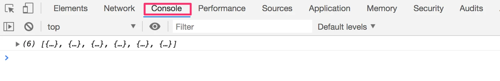
بالنقر على المثلث الصغير في بداية السطر، يمكنك توسيع النص في وحدة التحكم.
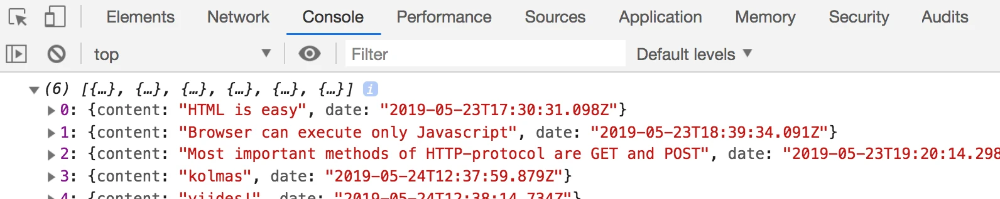
هذا الناتج في وحدة التحكم ناتج عن الأمر console.log في الشيفرة:
const data = JSON.parse(this.responseText)
console.log(data)
إذن، بعد استلام البيانات من الخادم، تطبعها الشيفرة في وحدة التحكم.
سيصبح تبويب Console والأمر console.log مألوفين جداً لك خلال الدورة.
معالجات الأحداث ودوال الاستدعاء الراجع
بنية هذه الشيفرة غريبة بعض الشيء:
var xhttp = new XMLHttpRequest()
xhttp.onreadystatechange = function() {
// الشيفرة التي تتولى معالجة استجابة الخادم
}
xhttp.open('GET', '/data.json', true)
xhttp.send()
يُرسل الطلب إلى الخادم في السطر الأخير، لكن شيفرة معالجة الاستجابة موجودة في الأعلى. فما الذي يحدث؟
xhttp.onreadystatechange = function () {
في هذا السطر، يُعرَّف معالج حدث للحدث onreadystatechange للكائن xhttp الذي يُجري الطلب. وعندما تتغيّر حالة الكائن، يستدعي المتصفح دالة معالج الحدث. وتتحقق شيفرة الدالة من أن readyState يساوي 4 (وهو ما يعبّر عن الحالة اكتملت العملية) ومن أن رمز حالة HTTP للاستجابة هو 200.
xhttp.onreadystatechange = function() {
if (this.readyState == 4 && this.status == 200) {
// الشيفرة التي تتولى معالجة استجابة الخادم
}
}
آلية استدعاء معالجات الأحداث شائعة جداً في JavaScript. وتُسمى دوال معالجات الأحداث دوال استدعاء راجع (callback). فلا تستدعي شيفرة التطبيق الدوال بنفسها، بل تستدعيها بيئة التشغيل — أي المتصفح — في الوقت المناسب عندما يقع الحدث.
نموذج كائن المستند أو DOM
يمكننا التفكير في صفحات HTML كبنى شجرية ضمنية.
html
head
link
script
body
div
h1
div
ul
li
li
li
form
input
input
ويمكن رؤية البنية الشجرية نفسها في تبويب Elements بوحدة التحكم.
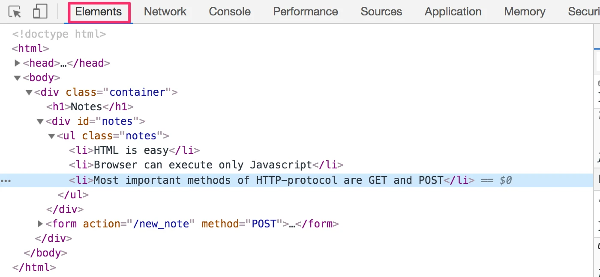
يقوم عمل المتصفح على فكرة تمثيل عناصر HTML كشجرة.
نموذج كائن المستند، أو DOM، هو واجهة برمجة تطبيقات (API) تتيح تعديل أشجار العناصر المقابلة لصفحات الويب برمجياً.
استخدمت شيفرة JavaScript المقدَّمة في الفصل السابق واجهة DOM-API لإضافة قائمة ملاحظات إلى الصفحة.
تنشئ الشيفرة التالية عقدة جديدة، وتُسندها إلى المتغير ul، وتضيف إليها بعض العقد الفرعية:
var ul = document.createElement('ul')
data.forEach(function(note) {
var li = document.createElement('li')
ul.appendChild(li)
li.appendChild(document.createTextNode(note.content))
})
وأخيراً، يُوصل فرع الشجرة الخاص بالمتغير ul إلى مكانه الصحيح في شجرة HTML للصفحة كاملة:
document.getElementById('notes').appendChild(ul)
التلاعب بكائن المستند من وحدة التحكم
تُسمى العقدة العليا في شجرة DOM لمستند HTML كائن document. ويمكننا إجراء عمليات متنوعة على صفحة ويب باستخدام DOM-API. ويمكنك الوصول إلى كائن document بكتابة document في تبويب Console:
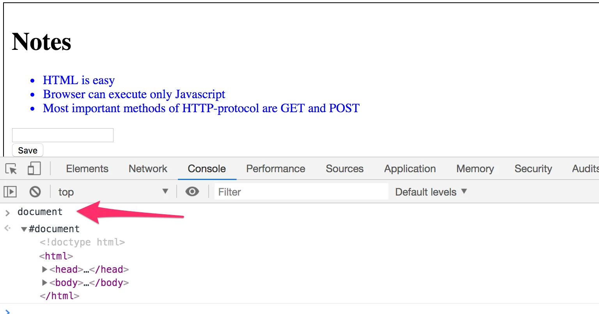
لنضف ملاحظة جديدة إلى الصفحة من وحدة التحكم.
أولاً، سنحصل على قائمة الملاحظات من الصفحة. القائمة موجودة في أول عنصر ul في الصفحة:
list = document.getElementsByTagName('ul')[0]
ثم أنشئ عنصر li جديداً وأضف إليه بعض المحتوى النصي:
newElement = document.createElement('li')
newElement.textContent = 'Page manipulation from console is easy'
وأضف عنصر li الجديد إلى القائمة:
list.appendChild(newElement)
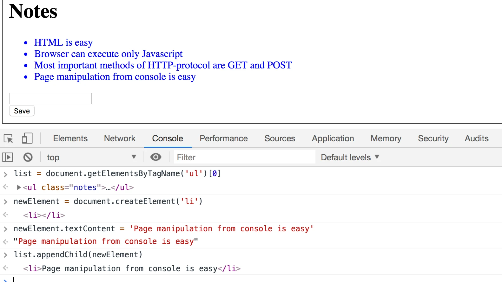
رغم أن الصفحة تتحدّث في متصفحك، فإن التغييرات ليست دائمة. فإذا أُعيد تحميل الصفحة، ستختفي الملاحظة الجديدة لأن التغييرات لم تُرسل إلى الخادم. وشيفرة JavaScript التي يجلبها المتصفح ستنشئ دائماً قائمة الملاحظات بناءً على بيانات JSON من العنوان https://studies.cs.helsinki.fi/exampleapp/data.json.
CSS
يحتوي عنصر head في شيفرة HTML لصفحة Notes على وسم link، وهو يحدد أنه على المتصفح جلب ورقة أنماط CSS من العنوان main.css.
أوراق الأنماط المتتالية (Cascading Style Sheets)، أو CSS، هي لغة أوراق أنماط تُستخدم لتحديد مظهر صفحات الويب.
يبدو ملف CSS المجلوب كما يلي:
.container {
padding: 10px;
border: 1px solid;
}
.notes {
color: blue;
}
يعرّف الملف محددَي فئة (class selectors). ويُستخدمان لتحديد أجزاء معينة من الصفحة وتعريف قواعد تنسيق لتنسيقها.
يبدأ تعريف محدد الفئة دائماً بنقطة ويحتوي على اسم الفئة.
الفئات هي خصائص، ويمكن إضافتها إلى عناصر HTML.
يمكن فحص خصائص CSS في تبويب Elements بوحدة التحكم:
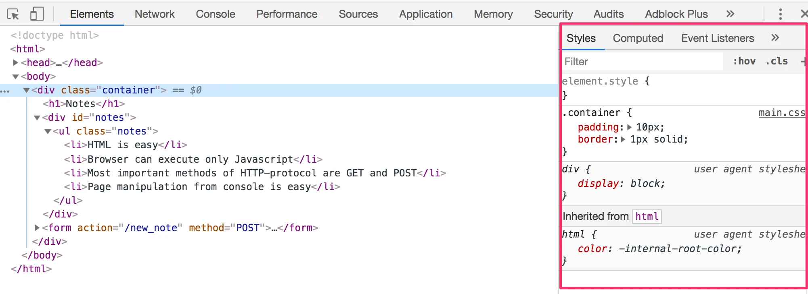
يحمل عنصر div الخارجي الفئة container. ويحمل عنصر ul الذي يحتوي على قائمة الملاحظات الفئة notes.
تحدد قاعدة CSS أن العناصر ذات الفئة container ستُحيط بها حدود بعرض بكسل واحد. كما تضبط حشوة بمقدار 10 بكسلات للعنصر. وهذا يضيف بعض المساحة الفارغة بين محتوى العنصر والحدود.
تضبط قاعدة CSS الثانية لون النص للفئة notes على الأزرق.
يمكن أن تحمل عناصر HTML خصائص أخرى غير الفئات. فعنصر div الذي يحتوي على الملاحظات يحمل خاصية id. وتستخدم شيفرة JavaScript المعرّف (id) للعثور على العنصر.
يمكن استخدام تبويب Elements في وحدة التحكم لتغيير أنماط العناصر.
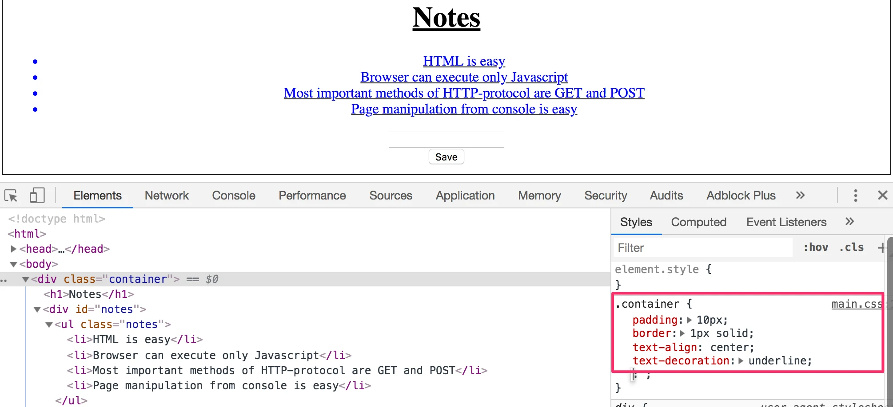
لن تكون التغييرات المُجراة في وحدة التحكم دائمة. وإذا أردت إجراء تغييرات دائمة، فيجب حفظها في ورقة أنماط CSS على الخادم.
تحميل صفحة تحتوي على JavaScript — مراجعة
لنراجع ما يحدث عند فتح الصفحة https://studies.cs.helsinki.fi/exampleapp/notes في المتصفح.
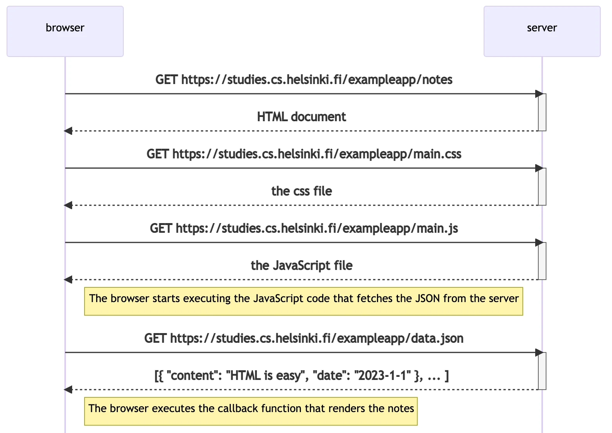
- يجلب المتصفح من الخادم شيفرة HTML التي تحدد محتوى الصفحة وبنيتها باستخدام طلب HTTP GET.
- تدفع الروابط في شيفرة HTML المتصفحَ إلى جلب ورقة أنماط CSS main.css أيضاً...
- ...وملف شيفرة JavaScript main.js
- ينفّذ المتصفح شيفرة JavaScript. وتُرسل الشيفرة طلب HTTP GET إلى العنوان https://studies.cs.helsinki.fi/exampleapp/data.json، الذي يعيد الملاحظات كبيانات JSON.
- عند جلب البيانات، ينفّذ المتصفح معالج حدث، يعرض الملاحظات في الصفحة باستخدام DOM-API.
النماذج و HTTP POST
بعد ذلك، لنفحص كيفية إضافة ملاحظة جديدة.
تحتوي صفحة Notes على عنصر نموذج.
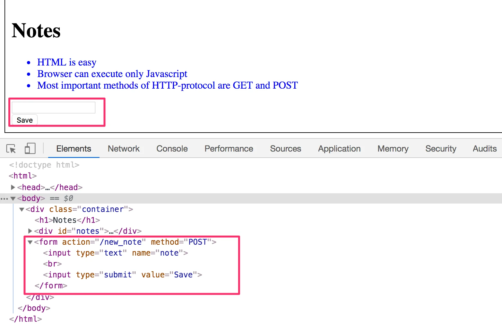
عند النقر على الزر في النموذج، يرسل المتصفح إدخال المستخدم إلى الخادم. لنفتح تبويب Network ونرَ كيف يبدو إرسال النموذج:
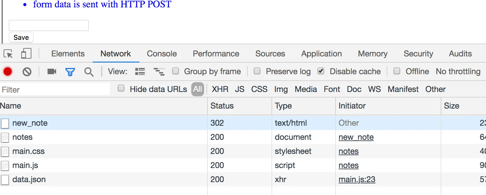
والمفاجئ أن إرسال النموذج يتسبب في ما لا يقل عن خمسة طلبات HTTP. الأول هو حدث إرسال النموذج. لنتفحّصه عن قرب:
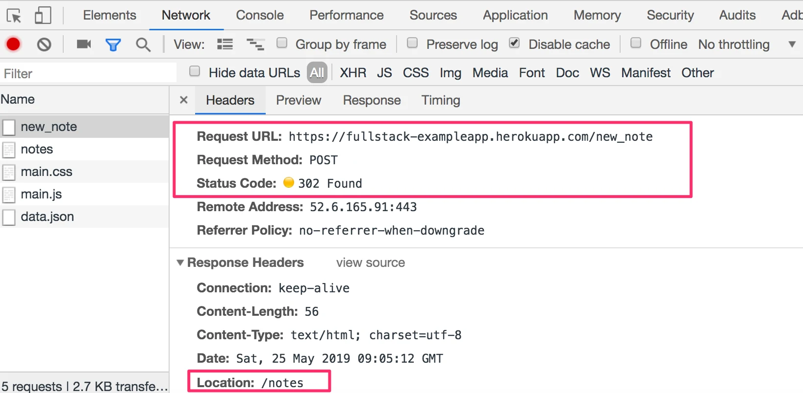
إنه طلب HTTP POST إلى عنوان الخادم new_note. ويستجيب الخادم برمز حالة HTTP هو 302. وهذا إعادة توجيه URL، يطلب به الخادم من المتصفح إجراء طلب HTTP GET جديد إلى العنوان المحدد في ترويسة Location — أي العنوان notes.
إذن، يعيد المتصفح تحميل صفحة Notes. وتتسبب إعادة التحميل في ثلاثة طلبات HTTP أخرى: جلب ورقة الأنماط (main.css)، وشيفرة JavaScript (main.js)، والبيانات الخام للملاحظات (data.json).
يعرض تبويب Network أيضاً البيانات المُرسلة مع النموذج. ويمكنك عرض البيانات باختيار اسم الطلب أولاً ثم فحص تبويب Payload:
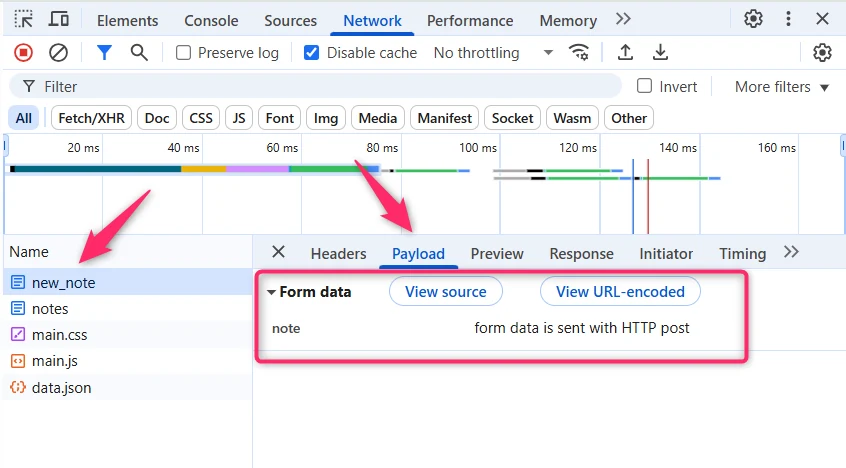
يحمل وسم Form الخاصيتين action و method، وهما تحددان أن إرسال النموذج يتم كطلب HTTP POST إلى العنوان new_note.
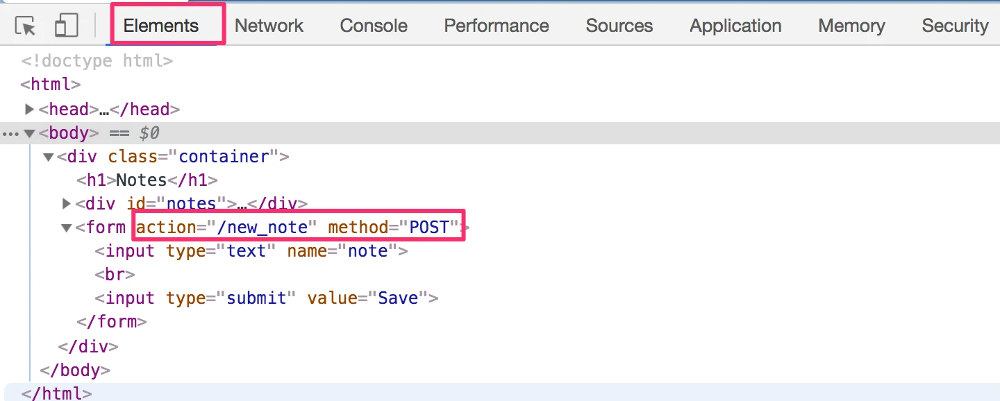
الشيفرة الموجودة على الخادم والمسؤولة عن طلب POST بسيطة جداً (ملاحظة: هذه الشيفرة على الخادم، وليست في شيفرة JavaScript التي يجلبها المتصفح):
app.post('/new_note', (req, res) => {
notes.push({
content: req.body.note,
date: new Date(),
})
return res.redirect('/notes')
})
تُرسل البيانات كـ body لطلب POST.
ويمكن للخادم الوصول إلى البيانات عبر الحقل req.body في كائن الطلب req.
ينشئ الخادم كائن ملاحظة جديداً، ويضيفه إلى مصفوفة تُسمى notes.
notes.push({
content: req.body.note,
date: new Date(),
})
لكل كائن ملاحظة حقلان: content الذي يحتوي على المحتوى الفعلي للملاحظة، و date الذي يحتوي على تاريخ ووقت إنشاء الملاحظة.
لا يحفظ الخادم الملاحظات الجديدة في قاعدة بيانات، لذا تختفي الملاحظات الجديدة عند إعادة تشغيل الخادم.
AJAX
تتبع صفحة Notes في التطبيق أسلوب تطوير الويب في أوائل التسعينيات وتستخدم "Ajax". وهي بذلك في ذروة موجة تقنية الويب في أوائل الألفينيات.
AJAX (JavaScript و XML غير المتزامنين) مصطلح ظهر في فبراير 2005 على خلفية التطورات في تقنية المتصفحات، لوصف نهج ثوري جديد أتاح جلب محتوى إلى صفحات الويب باستخدام JavaScript المضمّن داخل HTML، دون الحاجة إلى إعادة عرض الصفحة.
قبل عصر AJAX، كانت كل صفحات الويب تعمل مثل تطبيق الويب التقليدي الذي رأيناه سابقاً في هذا الفصل. وكانت كل البيانات المعروضة في الصفحة تُجلب مع شيفرة HTML التي يولّدها الخادم.
تستخدم صفحة Notes تقنية AJAX لجلب بيانات الملاحظات. أما إرسال النموذج فلا يزال يستخدم الآلية التقليدية لإرسال نماذج الويب.
تعكس عناوين URL في التطبيق تلك الأزمنة القديمة الخالية من الهموم. فبيانات JSON تُجلب من العنوان https://studies.cs.helsinki.fi/exampleapp/data.json، وتُرسل الملاحظات الجديدة إلى العنوان https://studies.cs.helsinki.fi/exampleapp/new_note. وفي أيامنا هذه لن تُعتبر عناوين كهذه مقبولة، لأنها لا تتبع الأعراف المتعارف عليها لواجهات RESTful، والتي سنتناولها بمزيد من التفصيل في الجزء 3.
أصبح ما يُسمى AJAX الآن شائعاً إلى حد أنه صار أمراً مسلّماً به. فقد تلاشى المصطلح في طيّ النسيان، ولم يعد الجيل الجديد قد سمع به حتى.
تطبيق الصفحة الواحدة
في تطبيقنا المثال، تعمل الصفحة الرئيسية كصفحة ويب تقليدية: فكل المنطق على الخادم، ولا يفعل المتصفح سوى عرض HTML كما هو مطلوب.
تسند صفحة Notes بعض المسؤولية، وهي توليد شيفرة HTML للملاحظات الموجودة، إلى المتصفح. ويتولى المتصفح هذه المهمة بتنفيذ شيفرة JavaScript التي جلبها من الخادم. فتجلب الشيفرة الملاحظات من الخادم كبيانات JSON، وتضيف إلى الصفحة عناصر HTML لعرض الملاحظات باستخدام DOM-API.
في السنوات الأخيرة، برز أسلوب تطبيق الصفحة الواحدة (SPA) في إنشاء تطبيقات الويب. فلا تجلب مواقع أسلوب SPA كل صفحاتها منفصلة من الخادم كما يفعل تطبيقنا المثال، بل تتألف من صفحة HTML واحدة فقط تُجلب من الخادم، ويُتلاعب بمحتوياتها بـ JavaScript يُنفَّذ في المتصفح.
تشبه صفحة Notes في تطبيقنا تطبيقات أسلوب SPA إلى حد ما، لكنها ليست كذلك تماماً بعد. فرغم أن منطق عرض الملاحظات يُنفَّذ في المتصفح، لا تزال الصفحة تستخدم الطريقة التقليدية لإضافة ملاحظات جديدة. إذ تُرسل البيانات إلى الخادم عبر إرسال النموذج، ويطلب الخادم من المتصفح إعادة تحميل صفحة Notes بـإعادة توجيه.
يمكن العثور على نسخة تطبيق الصفحة الواحدة من تطبيقنا المثال على العنوان https://studies.cs.helsinki.fi/exampleapp/spa. للوهلة الأولى، يبدو التطبيق مطابقاً تماماً للتطبيق السابق. فشيفرة HTML متطابقة تقريباً، لكن ملف JavaScript مختلف (spa.js) وهناك تغيير صغير في كيفية تعريف وسم form:
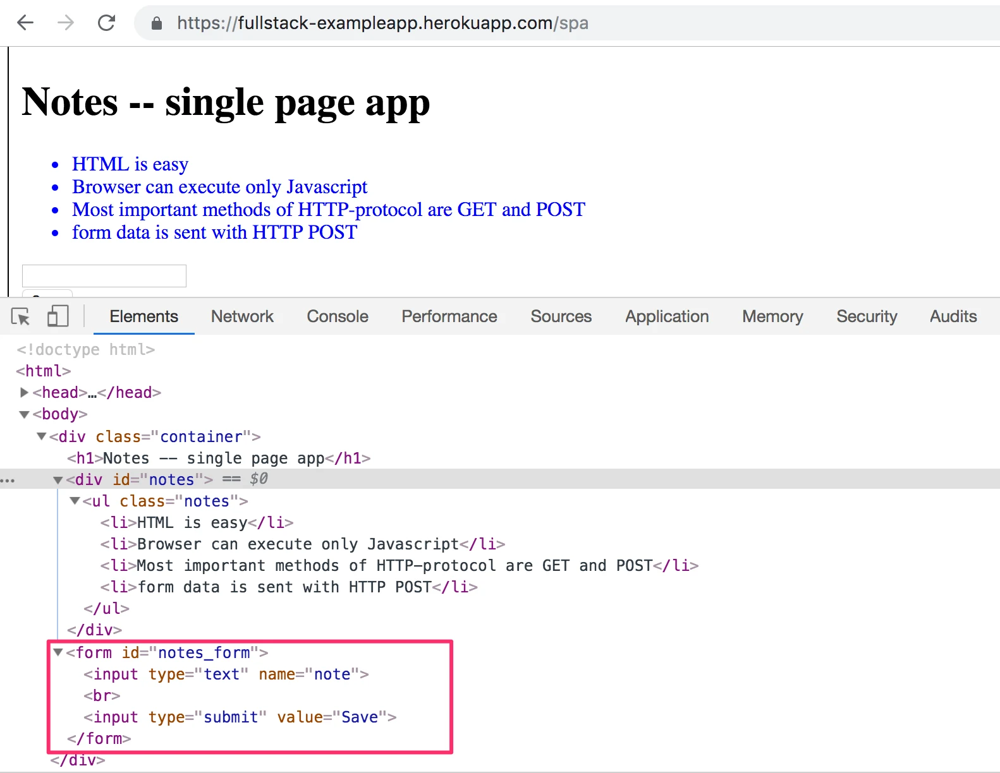
لا يحمل النموذج الخاصيتين action أو method لتحديد كيفية إرسال بيانات الإدخال وإلى أين.
افتح تبويب Network وأفرغه. والآن عند إنشاء ملاحظة جديدة، ستلاحظ أن المتصفح يرسل طلباً واحداً فقط إلى الخادم.
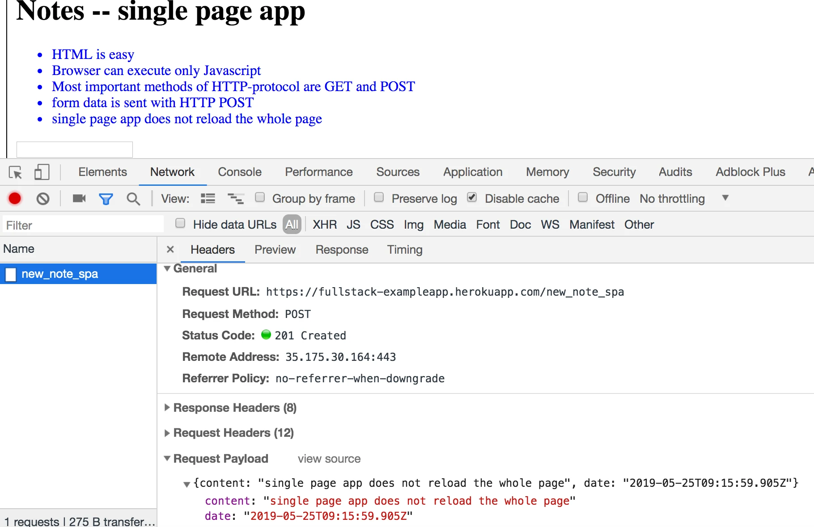
يحتوي طلب POST إلى العنوان new_note_spa على الملاحظة الجديدة كبيانات JSON تضم كلاً من محتوى الملاحظة (content) والطابع الزمني (date):
{
content: "single page app does not reload the whole page",
date: "2019-05-25T15:15:59.905Z"
}
تُخبر ترويسة Content-Type في الطلب الخادمَ بأن البيانات المضمّنة ممثلة بصيغة JSON.
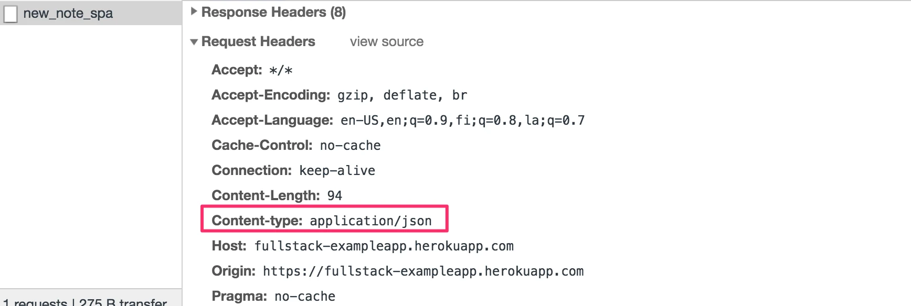
بدون هذه الترويسة، لن يعرف الخادم كيفية تحليل البيانات بشكل صحيح.
يستجيب الخادم برمز الحالة 201 created. وهذه المرة لا يطلب الخادم إعادة توجيه، فيبقى المتصفح في الصفحة نفسها ولا يرسل مزيداً من طلبات HTTP.
لا ترسل نسخة SPA من التطبيق بيانات النموذج بالطريقة التقليدية، بل تستخدم شيفرة JavaScript التي جلبها من الخادم. وسننظر في هذه الشيفرة قليلاً، رغم أن فهم كل تفاصيلها ليس مهماً بعد.
var form = document.getElementById('notes_form')
form.onsubmit = function(e) {
e.preventDefault()
var note = {
content: e.target.elements[0].value,
date: new Date(),
}
notes.push(note)
e.target.elements[0].value = ''
redrawNotes()
sendToServer(note)
}
يوجّه الأمر document.getElementById('notes_form') الشيفرةَ إلى جلب مرجع إلى عنصر نموذج HTML في الصفحة الذي يحمل المعرّف "notes_form" وتسجيل معالج حدث للتعامل مع حدث إرسال النموذج. ويستدعي معالج الحدث فوراً الدالة e.preventDefault() لمنع المعالجة الافتراضية لإرسال النموذج. فالطريقة الافتراضية سترسل البيانات إلى الخادم وتتسبب في طلب GET جديد، وهو ما لا نريده.
ثم ينشئ معالج الحدث ملاحظة جديدة، ويضيفها إلى قائمة الملاحظات بالأمر notes.push(note)، ويعيد عرض قائمة الملاحظات في الصفحة، ويرسل الملاحظة الجديدة إلى الخادم.
شيفرة إرسال الملاحظة إلى الخادم كما يلي:
var sendToServer = function(note) {
var xhttpForPost = new XMLHttpRequest()
// ...
xhttpForPost.open('POST', '/new_note_spa', true)
xhttpForPost.setRequestHeader('Content-type', 'application/json')
xhttpForPost.send(JSON.stringify(note))
}
تحدد الشيفرة أن البيانات ستُرسل بطلب HTTP POST وأن نوع البيانات هو JSON. ويُحدد نوع البيانات بترويسة Content-type. ثم تُرسل البيانات كنص JSON.
شيفرة التطبيق متاحة على https://github.com/mluukkai/example_app. ويجدر التذكير بأن التطبيق مقصود فقط لتوضيح مفاهيم الدورة. فالشيفرة تتبع أسلوب تطوير رديئاً في بعض النواحي، ولا ينبغي استخدامها كمثال عند إنشاء تطبيقاتك. وينطبق الشيء نفسه على عناوين URL المستخدمة. فعنوان URL new_note_spa الذي تُرسل إليه الملاحظات الجديدة لا يتوافق مع أفضل الممارسات الحالية.
مكتبات JavaScript
أُنجز التطبيق المثال بما يُسمى JavaScript الخالص (vanilla JavaScript)، باستخدام DOM-API و JavaScript فقط للتلاعب ببنية الصفحات.
وبدلاً من استخدام JavaScript و DOM-API فقط، تُستخدم غالباً مكتبات مختلفة تحتوي على أدوات أسهل في التعامل من DOM-API للتلاعب بالصفحات. ومن هذه المكتبات jQuery الشائعة جداً.
طُوّرت jQuery في زمن كانت فيه تطبيقات الويب تتبع أساساً الأسلوب التقليدي حيث يولّد الخادم صفحات HTML، وتُعزَّز وظائفها في المتصفح باستخدام JavaScript المكتوبة بـ jQuery. ومن أسباب نجاح jQuery ما يُسمى التوافق عبر المتصفحات. فقد كانت المكتبة تعمل بغض النظر عن المتصفح أو الشركة المصنّعة له، فلم تكن هناك حاجة إلى حلول خاصة بكل متصفح. أما اليوم فلم يعد استخدام jQuery مبرَّراً بنفس القدر نظراً لتقدم JavaScript، ولأن المتصفحات الأكثر شعبية تدعم الوظائف الأساسية جيداً عموماً.
جلب صعود تطبيق الصفحة الواحدة عدة طرق «أحدث» لتطوير الويب من jQuery. وكانت BackboneJS المفضلة لدى الموجة الأولى من المطورين. وبعد إطلاقها في 2012، سرعان ما أصبحت AngularJS من Google المعيار الفعلي تقريباً لتطوير الويب الحديث.
غير أن شعبية Angular انهارت في أكتوبر 2014 بعد أن أعلن فريق Angular أن الدعم للإصدار 1 سينتهي، وأن Angular 2 لن يكون متوافقاً مع الإصدار الأول. ولم يلقَ Angular 2 والإصدارات الأحدث ترحيباً حاراً.
حالياً، الأداة الأكثر شعبية لتنفيذ منطق تطبيقات الويب في المتصفح هي مكتبة React من Facebook. وخلال هذه الدورة، سنتعرف على React ومكتبة Zustand، اللتين كثيراً ما تُستخدمان معاً.
تبدو مكانة React قوية، لكن عالم JavaScript دائم التغير. فمثلاً، استحوذت حديثاً VueJS الوافدة الجديدة على بعض الاهتمام.
تطوير الويب Full stack
ماذا يعني اسم الدورة، تطوير الويب Full stack؟ كلمة Full stack مصطلح رائج يتحدث عنه الجميع، لكن لا أحد يعرف معناه. أو على الأقل، لا يوجد تعريف متفق عليه للمصطلح.
عملياً، لجميع تطبيقات الويب (طبقتان) على الأقل: المتصفح، لكونه أقرب إلى المستخدم النهائي، هو الطبقة العليا، والخادم هو الطبقة السفلى. وكثيراً ما توجد أيضاً طبقة قاعدة بيانات أسفل الخادم. لذا يمكننا التفكير في معمارية تطبيق الويب كـكومة من الطبقات.
وكثيراً ما نتحدث أيضاً عن الواجهة الأمامية والواجهة الخلفية. فالمتصفح هو الواجهة الأمامية، و JavaScript التي تعمل في المتصفح هي شيفرة الواجهة الأمامية. أما الخادم فهو الواجهة الخلفية.
في سياق هذه الدورة، يعني تطوير الويب Full stack أننا نركّز على كل أجزاء التطبيق: الواجهة الأمامية والواجهة الخلفية وقاعدة البيانات. وأحياناً يُنظر إلى البرمجيات على الخادم ونظام تشغيله كأجزاء من الحزمة، لكننا لن نخوض في ذلك.
سنبرمج الواجهة الخلفية بـ JavaScript باستخدام بيئة التشغيل Node.js. واستخدام لغة البرمجة نفسها في طبقات متعددة من الحزمة يمنح تطوير الويب Full stack بُعداً جديداً تماماً. ومع ذلك، ليس من متطلبات تطوير الويب Full stack استخدام لغة البرمجة نفسها (JavaScript) في كل طبقات الحزمة.
كان من الشائع أكثر أن يتخصص المطورون في طبقة واحدة من الحزمة، مثل الواجهة الخلفية. فقد كانت التقنيات في الواجهة الخلفية والأمامية مختلفة تماماً. ومع اتجاه Full stack، أصبح من الشائع أن يكون المطورون بارعين في كل طبقات التطبيق وقاعدة البيانات. وغالباً ما يجب أن يمتلك مطورو Full stack أيضاً مهارات كافية في الإعداد والإدارة لتشغيل تطبيقاتهم، مثلاً في السحابة.
إرهاق JavaScript
تطوير الويب Full stack مليء بالتحديات من نواحٍ كثيرة. فالأمور تحدث في أماكن كثيرة في آن واحد، وتصحيح الأخطاء أصعب بكثير مما هو عليه في تطبيقات سطح المكتب العادية. ولا تعمل JavaScript دائماً كما تتوقع (مقارنة بلغات أخرى كثيرة)، كما أن الطريقة غير المتزامنة التي تعمل بها بيئات تشغيلها تسبب شتى التحديات. ويتطلب التواصل على الويب معرفة ببروتوكول HTTP. وعلى المرء أيضاً التعامل مع قواعد البيانات وإدارة الخادم وإعداده. ويُستحسن أيضاً معرفة قدر كافٍ من CSS لجعل التطبيقات مقبولة المظهر على الأقل.
يتطور عالم JavaScript بسرعة، وهذا يجلب معه مجموعة تحدياته الخاصة. فالأدوات والمكتبات واللغة نفسها في تطوير مستمر. وقد بدأ بعضهم يتعب من التغيير الدائم، فصاغوا له مصطلحاً: إرهاق JavaScript. انظر كيفية إدارة إرهاق JavaScript على auth0 أو إرهاق JavaScript على Medium.
ستعاني أنت أيضاً من إرهاق JavaScript خلال هذه الدورة. ولحسن الحظ، هناك بضع طرق لتسهيل منحنى التعلم، ويمكننا البدء بالبرمجة بدلاً من الإعداد. لا يمكننا تجنّب الإعداد تماماً، لكن يمكننا المضي قُدماً بسرور في الأسابيع القليلة القادمة مع تجنّب أسوأ جحيم الإعدادات.
تمارين 0.1.-0.6.
تُسلَّم التمارين عبر GitHub، وبتعليم التمارين كمنجزة في تبويب "my submissions" في نظام التسليم.
يمكنك تسليم كل التمارين في المستودع نفسه، أو استخدام عدة مستودعات مختلفة. وإذا سلّمت تمارين من أجزاء مختلفة في المستودع نفسه، فسمِّ مجلداتك تسمية جيدة. وإذا استخدمت مستودعاً خاصاً لتسليم التمارين، فأضف mluukkai كمتعاون فيه.
من الطرق الجيدة لتسمية المجلدات في مستودع تسليمك ما يلي:
part0
part1
courseinfo
unicafe
anecdotes
part2
courseinfo
phonebook
countries
إذن، لكل جزء مجلده الخاص، الذي يحتوي على مجلد لكل مجموعة تمارين (مثل تمارين unicafe في الجزء 1).
تُسلَّم التمارين جزءاً واحداً في كل مرة. وعند تسليم تمارين جزء ما، لن تتمكن بعد ذلك من تسليم أي تمارين فائتة لذلك الجزء.
0.1: HTML
راجع أساسيات HTML بقراءة هذا الدرس من Mozilla: درس HTML.
لا يُسلَّم هذا التمرين إلى GitHub، ويكفي قراءة الدرس فقط
0.2: CSS
راجع أساسيات CSS بقراءة هذا الدرس من Mozilla: درس CSS.
لا يُسلَّم هذا التمرين إلى GitHub، ويكفي قراءة الدرس فقط
0.3: نماذج HTML
تعلّم أساسيات نماذج HTML بقراءة درس Mozilla نموذجك الأول.
لا يُسلَّم هذا التمرين إلى GitHub، ويكفي قراءة الدرس فقط
0.4: مخطط ملاحظة جديدة
في قسم تحميل صفحة تحتوي على JavaScript — مراجعة، تُمثَّل سلسلة الأحداث الناتجة عن فتح الصفحة https://studies.cs.helsinki.fi/exampleapp/notes بـمخطط تتابع
أُعدّ المخطط كملف GitHub Markdown باستخدام صيغة Mermaid، كما يلي:
sequenceDiagram
participant browser
participant server
browser->>server: GET https://studies.cs.helsinki.fi/exampleapp/notes
activate server
server-->>browser: HTML document
deactivate server
browser->>server: GET https://studies.cs.helsinki.fi/exampleapp/main.css
activate server
server-->>browser: the css file
deactivate server
browser->>server: GET https://studies.cs.helsinki.fi/exampleapp/main.js
activate server
server-->>browser: the JavaScript file
deactivate server
Note right of browser: The browser starts executing the JavaScript code that fetches the JSON from the server
browser->>server: GET https://studies.cs.helsinki.fi/exampleapp/data.json
activate server
server-->>browser: [{ "content": "HTML is easy", "date": "2023-1-1" }, ... ]
deactivate server
Note right of browser: The browser executes the callback function that renders the notes
أنشئ مخططاً مشابهاً يوضّح الحالة التي ينشئ فيها المستخدم ملاحظة جديدة في الصفحة https://studies.cs.helsinki.fi/exampleapp/notes بكتابة شيء في حقل النص والنقر على زر Save.
إذا لزم الأمر، اعرض العمليات في المتصفح أو على الخادم كتعليقات في المخطط.
لا يلزم أن يكون المخطط مخطط تتابع. فأي طريقة معقولة لعرض الأحداث تكون مقبولة.
يمكن العثور على كل المعلومات اللازمة للقيام بذلك، وللتمرينين التاليين، في نص هذا الجزء. والفكرة من هذه التمارين هي قراءة النص مرة أخرى والتفكير في ما يجري فيه. وقراءة شيفرة التطبيق ليست ضرورية، لكنها ممكنة بالطبع.
يمكنك إعداد المخططات بأي برنامج، لكن ربما أسهل وأفضل طريقة لعمل المخططات هي صيغة Mermaid المُدمجة الآن في صفحات GitHub Markdown!
0.5: مخطط تطبيق الصفحة الواحدة
أنشئ مخططاً يوضّح الحالة التي ينتقل فيها المستخدم إلى نسخة تطبيق الصفحة الواحدة من تطبيق الملاحظات على العنوان https://studies.cs.helsinki.fi/exampleapp/spa.
0.6: ملاحظة جديدة في مخطط تطبيق الصفحة الواحدة
أنشئ مخططاً يوضّح الحالة التي ينشئ فيها المستخدم ملاحظة جديدة باستخدام نسخة الصفحة الواحدة من التطبيق.
كان هذا آخر تمرين، وقد حان وقت رفع إجاباتك إلى GitHub وتعليم التمارين كمنجزة في نظام التسليم.